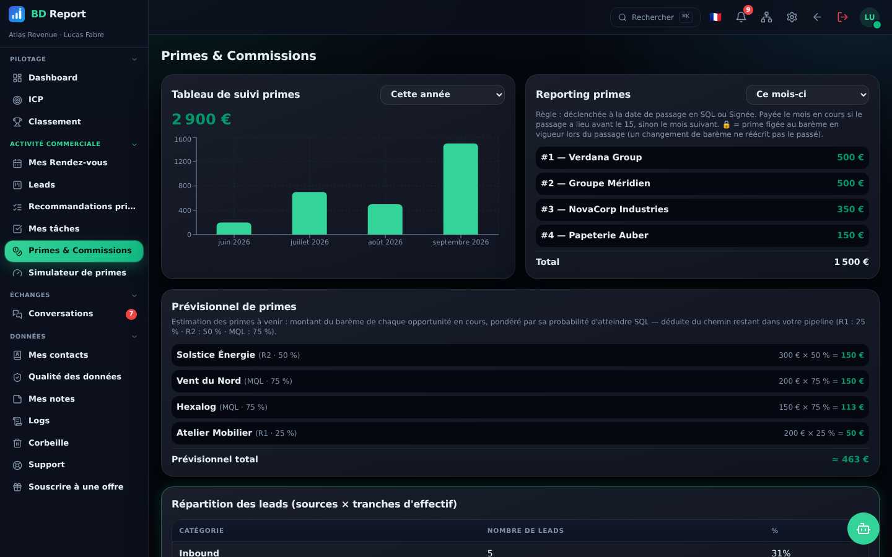
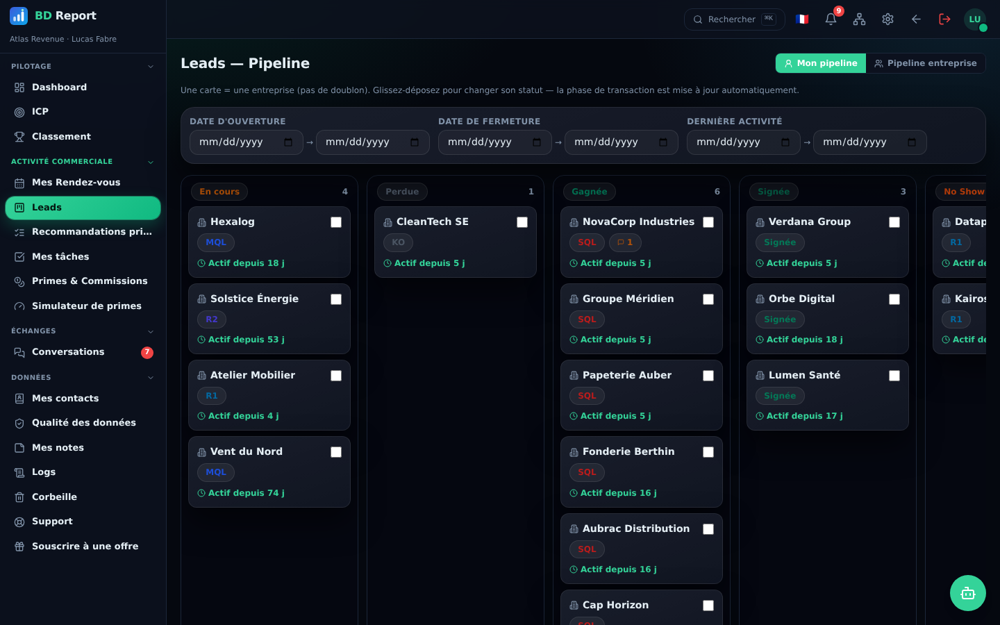
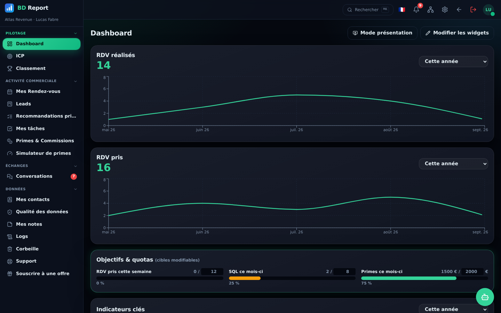

Le produit
Un cockpit pour la performance commerciale.
Sobre, rapide, précis. Voici quelques vues réelles de l'application.

Primes & commissions
Pipeline kanban Pilotage d'équipe
Pilotage d'équipeLes rendez-vous, le pipeline, les primes et le pilotage d'équipe dans un seul espace. Chaque passage en SQL déclenche la prime au barème en vigueur ce jour-là — sans tableur et sans discussion en fin de mois.
Sans carte bancaire · Prêt à l'emploi en quelques minutes · FR · EN · ES

Trois problèmes reviennent dans toutes les équipes outbound. Aucun ne vient du manque de travail.
Une formule modifiée en cours d'année, et personne ne sait plus quel barème s'appliquait au moment du deal. La fin de mois se négocie au lieu de se constater.
Le CRM, l'agenda, le fichier de suivi, la conversation d'équipe. Chacun a un chiffre, aucun n'est le même, et la moitié du temps de reporting sert à les réconcilier.
Sans vision de l'activité au fil de l'eau, un manager ne voit le trou qu'une fois le mois joué — quand il ne reste plus assez de jours pour le rattraper.
Une seule chaîne, saisie une seule fois. Chaque étape hérite de la précédente : le rendez-vous devient une opportunité, l'opportunité devient une prime, et le montant reste vérifiable ligne à ligne.
Barèmes versionnés, règle du 15, prévisionnel pondéré : chaque SQL déclenche automatiquement la bonne prime, figée à l'instant du passage. Plus de tableur, plus de contestation.
Le commercial pilote son activité ; le manager pilote l'équipe. Les mêmes données, deux points de vue.
Sobre, rapide, précis. Voici quelques vues réelles de l'application.

Primes & commissions
Pipeline kanbanPilotage d'équipeUn seul cockpit à la place de dix outils.
Les réponses courtes. Les longues sont dans la démo.
Gardez-le. Un CRM suit des comptes ; il ne calcule pas la rémunération d'un BDR, ne sait pas ce qu'un no-show a coûté, et n'affiche pas au commercial ce qu'il touchera ce mois-ci. BD Report se branche sur HubSpot et pousse entreprises, contacts, rendez-vous et tâches dans votre portail : les deux outils racontent la même histoire. Voir le comparatif détaillé →
C'est la règle générale, pas l'exception. Vous définissez vos étapes de pipeline, celles qui déclenchent une prime, le jour de bascule d'un mois sur l'autre, un barème par lead et un barème par paliers d'activité — les deux cumulables. Si votre plan tient dans un tableur, il tient ici.
Un espace se crée en quelques minutes et se remplit au fil des rendez-vous : il n'y a pas de reprise de données obligatoire. Une équipe entière se met en route avec un barème, un organigramme et les accès — l'affaire d'un après-midi.
Hébergement européen, chiffrement en transit et au repos, cloisonnement par entreprise et par collaborateur, journal d'audit horodaté et corbeille de 30 jours. Vous exportez la totalité en un fichier, à tout moment, sans nous le demander.
C'est le vrai risque de tout outil de reporting, et la raison pour laquelle celui-ci part de leur paie. Un BDR ouvre BD Report pour savoir où il en est de sa prime ; le reporting du manager est ce qu'il en reste, sans double saisie.
L'offre Starter est gratuite pour un usage solo. L'accès complet est aujourd'hui offert aux équipes bêta, en échange de leurs retours. Les tarifs d'après-bêta seront annoncés avant d'être appliqués, jamais rétroactivement.
L'offre Starter est gratuite et accessible immédiatement. L'offre Beta Testing, complète et exclusive, s'obtient sur invitation.
Pour démarrer en solo et tester l'essentiel.
Accédez à tout BD Report, en échange de vos retours.
Conseils de prospection, retours d'expérience et nouveautés produit — nos premiers articles sont en ligne.
Les 10 premières secondes décident de l'appel. Deux familles d'ouvertures surperforment : 7 exemples prêts à l'emploi et 5 phrases à bannir.
Lire l'article →Structure, équilibre 70/30, prime en trois briques, accélérateurs : le guide d'un plan de commissions clair, juste et motivant.
Lire l'article →Même heure, round-robin, trois questions, et les sujets longs renvoyés en aparté : le format d'un rituel court et utile.
Lire l'article →Installez l'application native sur Windows et macOS — même expérience, synchronisée dans le cloud.
Disponible aussi sur Linux. Application gratuite, mises à jour régulières.
Une question, une démo, un partenariat ? Écrivez-nous.